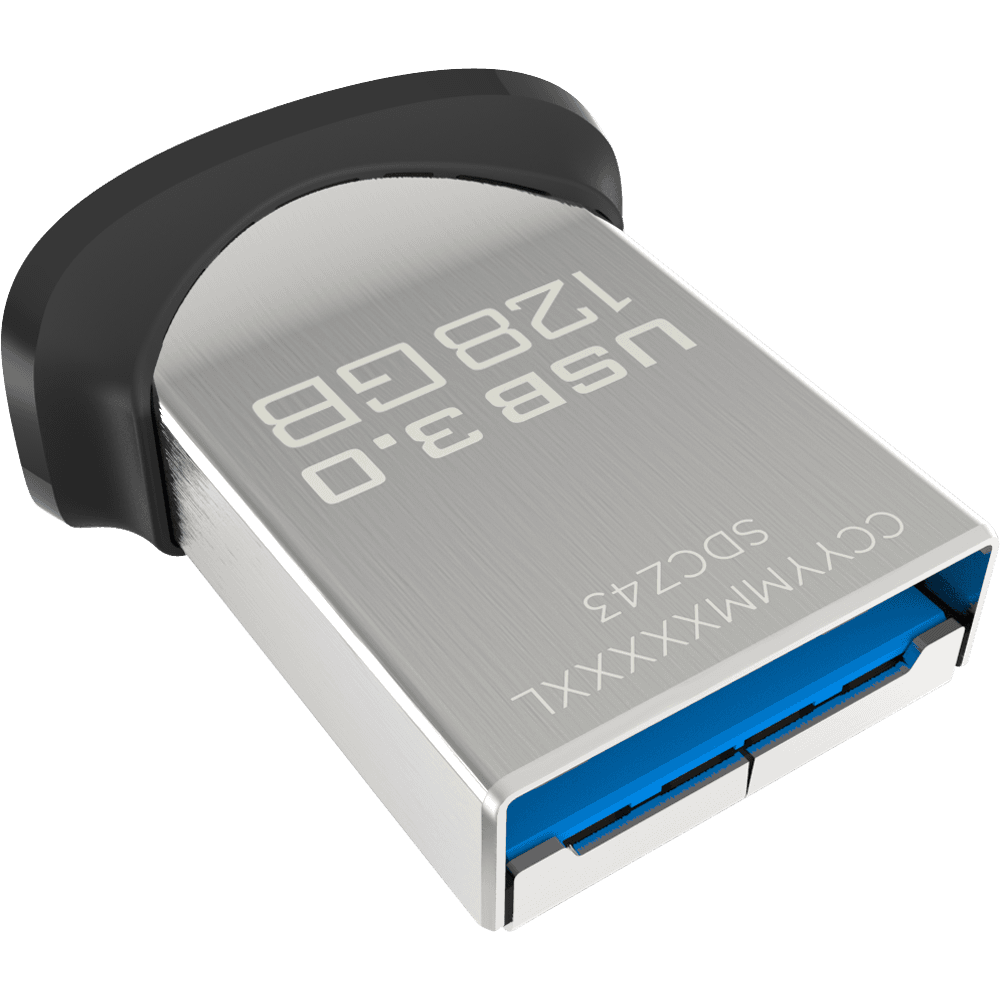

Installing Linux Mint 18.3 to a thumb drive and
configuring it to dual boot with Windows 10.
Obtain USB media
Install media drive (USB2, at least 4GB)
You will burn an ISO image of the Mint installer to this thumb drive
and use it to install Mint to the other thumb drive.
After installation, keep this drive. You can use it as recovery media,
if the need arises.
Recommended product:
SanDiskCruzer Fit
Linux Mint OS drive (USB3, at least 32GB)
You will install Linux Mint to this drive, which will become a permanent part of your computer.
Recommended product:
SanDiskUltra Fit

:
if [ "${next_entry}" ] ; then
set default="${next_entry}"
set next_entry=
save_env next_entry
set boot_once=true
else
set default="0"
if [ "${saved_entry}" ] ; then set default="${saved_entry}" ; fi
fi
:
if [ "${recordfail}" = 1 ] ; then
set timeout=30
else
if [ x$feature_timeout_style = xy ] ; then
set timeout_style=menu # hidden
set timeout=10 # 0
:
menuentry 'Linux Mint 18.3 Cinnamon 64-bit' ...
recordfail
:
linux /boot/vmlinuz-4.4.0-53-generic root=UUID=...
initrd /boot/initrd.img-4.4.0-53-generic
savedefault
}
:
### BEGIN /etc/grub.d/30_os-prober ###
menuentry 'Windows Boot Manager (on /dev/sda1)' --class windows --class os ...
insmod part_gpt
:
chainloader /EFI/Microsoft/Boot/bootmgfw.efi
savedefault
}
Run driver-manager to see if better graphics or wireless drivers are available.
If so, upgrade the drivers. Especially the graphics driver.
(You can, however, ignore microcode updates for now.)
Reboot and make sure everything works (graphics, sound, wireless, bluetooth)
Synchronize bluetooth pairing keys.
Pair devices on Linux.
Reboot to Windows, then un-pair and re-pair devices.
Reboot to Linux, then replace Linux pairing keys with Windows pairing keys.